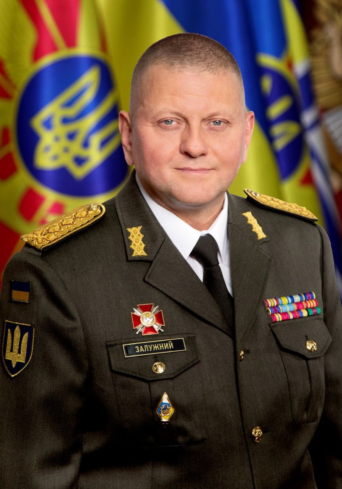
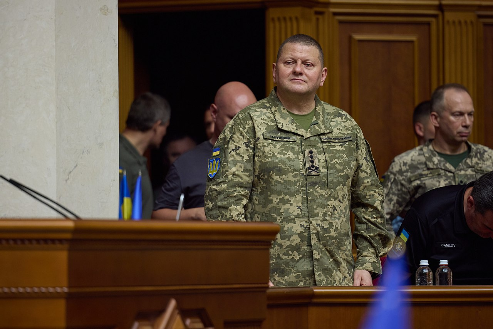
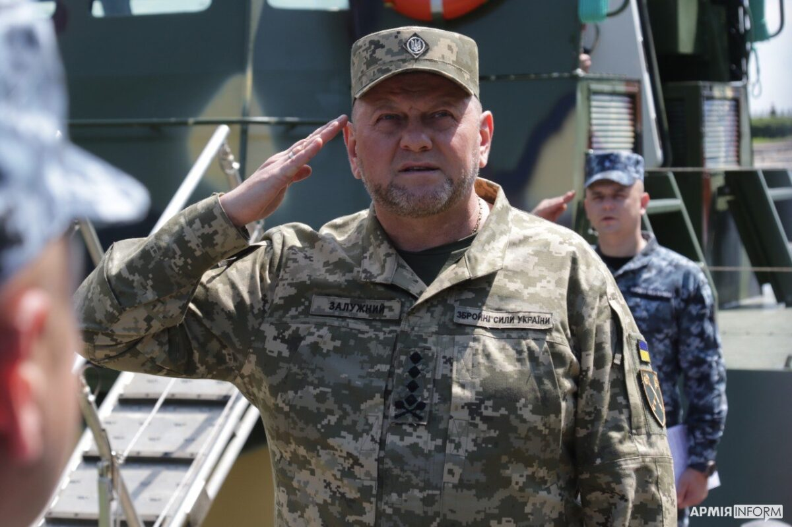
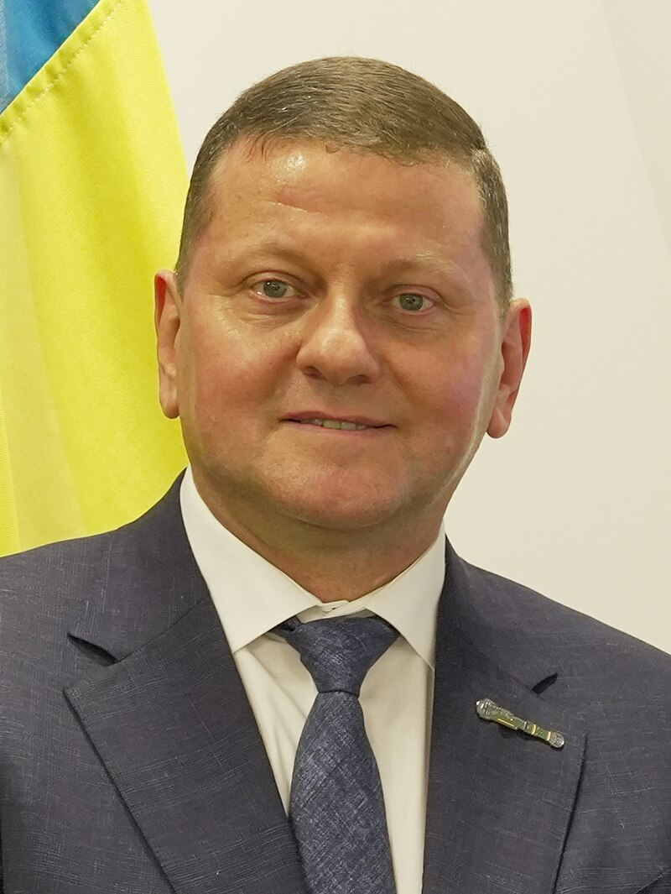

Вале́рій Фе́дорович Залу́жний
Вале́рій Фе́дорович Залу́жний - український воєначальник, генерал у відставці (нар. 8 липня 1973, Новоград-Волинський). Герой України (2024). Надзвичайний і Повноважний Посол України у Сполученому Королівстві Великої Британії і Північної Ірландії (з травня 2024). Постійний представник України при Міжнародній морській організації (за сумісництвом).
Колишній Головнокомандувач Збройних сил України (2021—2024), член Ради національної безпеки і оборони України (2021—2024), командувач військ Оперативного командування «Північ» (2019—2021), начальник Об'єднаного оперативного штабу ЗС України — перший заступник командувача Об'єднаних сил (2018), начальник штабу — перший заступник командувача військ Оперативного командування «Захід» (2017).
Увійшов до сотні найвпливовіших людей 2022 року за версією журналу Time, один із 25 найвпливовіших українських військових 2022 року від НВ.
Життєпис
Народився 8 липня 1973 року в місті Новограді-Волинському (нині — м. Звягель) в сім'ї робітників, в якій мати працювала на залізничному вокзалі міста Новоград-Волинський, а батько — на заводі. З дитинства мріяв стати військовим. У 1989 році закінчив міську школу № 9, вступив до Новоград-Волинського машинобудівного технікуму, який закінчив у 1993 році з відзнакою. Згодом вступив на загальновійськовий факультет Одеського інституту Сухопутних військ. У 1997 році з відзнакою закінчив навчання в інституті, після чого пройшов усі щаблі військової служби: командир взводу, командир навчального взводу, командир бойового взводу, командир навчальної роти, командир роти курсантів, командир батальйону.
2005 року вступив до Національної академії оборони України, у 2007 році закінчив навчання із золотою медаллю, призначений на посаду начальника штабу — першого заступника командира 24-ї окремої механізованої бригади в Яворові. На цій посаді успішно проходив службу впродовж двох із половиною років.
Рішенням начальника Генерального штабу Збройних Сил України, 13 жовтня 2009 року був призначений командиром 51-ї окремої механізованої бригади. Командував нею до 2012 року.
У жовтні 2024 року стало відомо, що колишній головнокомандувач Збройних сил України, а нині посол у Великій Британії Валерій Залужний написав книгу «Моя війна», що стала першою в трилогії. У мемуарах йдеться про події в житті ексголовкома від дитинства до 24 лютого 2022 року. Декілька розділів все-таки присвячені повномасштабній війні Росії проти України. Книга стала першою в трилогії — дві наступні матимуть назви «Наша війна» та «Їхня війна».
Нагороди та відзнаки
- Українські
- Звання Герой України з врученням ордена «Золота Зірка» (8 лютого 2024) — за визначні особисті заслуги у захисті державного суверенітету та територіальної цілісності України, самовіддане служіння Українському народові
- Хрест бойових заслуг (6 травня 2022) — за визначні особисті заслуги у захисті державного суверенітету та територіальної цілісності України, самовіддане служіння Українському народові та вірність військовій присязі
- Орден Богдана Хмельницького III ступеня (12 грудня 2016) — за особисту мужність, самовідданість і високий професіоналізм, виявлені у захисті державного суверенітету та територіальної цілісності України, вірність військовій присязі
- Іноземні
- Офіцерський хрест Ордену Хреста Витязя (6 липня 2023, Литва) — за надзвичайну мужність, стійкість і вірність обов'язку у боротьбі з найбільшим агресором 21 століття, терористичною Росією

Російсько-українська війна
У 2014 році закінчив Національний університет оборони України, як найкращий випускник оперативно-стратегічного рівня підготовки нагороджений перехідним мечем королеви Великої Британії.
У липні 2014 року став заступником командира сектора «С», який формувався на Донеччині. Відтоді керував майже всіма угрупованнями, які там створювали.
На 2017 рік ― начальник штабу — перший заступник командувача військ Оперативного командування «Захід».
23 серпня 2017 року отримав нове звання генерал-майора.
Станом на 2018 рік ― начальник Об'єднаного оперативного штабу ЗС України — перший заступник командувача Об'єднаних сил.
9 грудня 2019 року — призначений командувачем Оперативного командування «Північ».
У грудні 2020 року — закінчив магістеріум Острозької академії за спеціальністю «Міжнародні відносини».
Військові звання
- Підполковник (2010)
- Генерал-майор (23 серпня 2017)
- Генерал-лейтенант (24 серпня 2021)
- Генерал (4 березня 2022)

Головнокомандувач ЗСУ
27 липня 2021 року Президент України Володимир Зеленський призначив Валерія Залужного Головнокомандувачем Збройних Сил України. Він змінив на цій посаді Руслана Хомчака. Наступного дня був введений до складу Ради національної безпеки і оборони України.
Під час повномасштабного російського вторгнення в Україну проявив ефективність в командуванні Збройними Силами України на фронті проти російських військових, що детально аналізують вітчизняні та закордонні експерти, зокрема, у журналі «Time».
23 травня 2022 року увійшов до списку 100 найвпливовіших людей 2022 за версією журналу Time.
16 грудня 2023 року захистив дисертацію з права та здобув науковий ступінь доктора філософії. Захист дисертації на спеціальну тему відбувся в Одеській юридичній академії.
8 лютого 2024 року звільнений з посади головнокомандувача ЗСУ. Після цього відбулися масштабні кадрові зміни у керівництві ЗСУ.
Праці Валерія Залужного
- Залужний В. Ф. Сучасний стан дослідження дисциплінарної відповідальності військовослужбовців Збройних Сил України. Європейські орієнтири розвитку України в умовах війни та глобальних викликів ХХІ століття: синергія наукових, освітніх та технологічних рішень : у 2 т. : матеріали Міжнар. наук.- практ. конф. (м. Одеса, 19 травня 2023 р.) / за заг. ред. С. В. Ківалова. Одеса : Видавництво «Юридика», 2023. Т. 2. C. 11—14.
- Залужний В. Моя війна. Івано-Франківськ: Вавилонська бібліотека, 2024. 248 с.

Посол у Великій Британії
7 березня 2024 року президент Зеленський погодив Залужного на посаду посла України в Великій Британії. 19 квітня Залужний отримав погодження від Британії щодо призначення послом (агреман).
9 березня 2024 року Дзеркало тижня повідомило, що генерал Валерій Залужний після проходження ВЛК був визнаний непридатними для військової служби та знятий з військового обліку. Цього ж дня видання Українська правда повідомило, що, крім Валерія Залужного, аналогічне рішення було прийнято щодо колишнього Начальника Генерального штабу ЗСУ генерал-лейтенанта Сергія Шаптали. Валерій Залужний, який мав найвище військове звання в Україні, зможе отримувати оклад за нього в сумі 1 тисячу 762 гривні на місяць.
29 березня 2024 року видання ВВС звернуло увагу, що попри оголошення про намір, призначення Валерія Залужного послом у Велику Британію все ще не відбулось.
24 квітня 2024 року Радіо Свобода, з посиланням на інтерв'ю радника Офісу президента Михайла Подоляка в етері телеканалу «Київ», повідомило, що офіційний Лондон погодив кандидатуру Валерія Залужного на посаду посла України в Великобританії і «це питання вже тижнів».
8 травня звільнений з військової служби за станом здоров'я з правом носіння військової форми.
9 травня призначений послом України у Великій Британії. 8 червня 2024 року міністр закордонних справ України Дмитро Кулеба в інтерв'ю агентству Укрінформ повідомив, шо підготовка Валерія Залужного до дипломатичної роботи послом у Великобританії перебуває на фінішній прямій. Почав роботу послом 11 липня 2024 року.
13 листопада 2024 року Валерій Залужний як український посол в Сполученому королівстві заявив, що Україна веде перемовини з британським урядом про щорічне навчання у Великій Британії 5-7 тисяч українських студентів для підготовки кадрів для державного сектору. З його слів, така підготовка є важливою для проведення протягом наступних 20 років в Україні справжніх європейських стандартів держслужби та покращення взаємодії між бізнесом і державою.
20 грудня 2024 року у івано-франківському видавництві «Вавилонська бібліотека» вийшла друком книга Валерія Залужного «Моя війна» .
3 березня 2025 призначений постійним представником України при Міжнародній морській організації (за сумісництвом).
